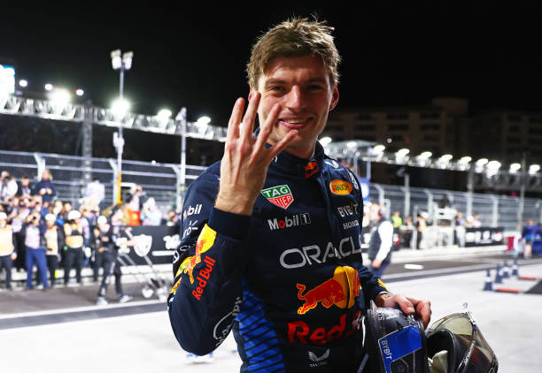

Max Verstappen's F1 Records
- Youngest driver to start a race – 17 years, 166 days (2015 Australian Grand Prix)
- Youngest driver to score points – 17 years, 180 days (2015 Malaysian Grand Prix)
- Youngest driver to score a podium finish – 18 years, 228 days (2016 Spanish Grand Prix)
- Youngest driver to win a race – 18 years, 228 days (2016 Spanish Grand Prix)
- Youngest driver to score a grand slam – 23 years, 277 days (2021 Austrian Grand Prix)
- Youngest driver to participate in Q3 – 17 years, 164 days (2015 Malaysian Grand Prix)
- Most wins in a season – 19 (2023)
- Most wins in one calendar month – 4 (2023 Austrian GP to Belgian GP)
- Most consecutive wins – 10 (2023 Miami GP to Italian GP)
- Highest win percentage in a season – 86.36% (2023)
- Most wins before first pole position – 7 (2019 German GP)
- Most wins from pole in a season – 12 (2023)
- Most wins not from pole in a season – 9 (2022)
- Most consecutive wins from pole – 18 (2022 Dutch GP to 2024 Saudi GP)
- Wins from most different grid slots – 10 (2024 São Paulo GP)
- Wins from most grid slots in a season – 7 (2022)
- Most sprint wins – 11 (2024 US GP sprint)
- Most sprint wins in a season – 4 (2023 and 2024)
- Most consecutive pole positions – 8 (2023 Abu Dhabi GP to 2024 Emilia Romagna GP)
- Most consecutive pole positions from start of a season – 7 (2024)
- Most podium finishes in a season – 21 (2023)
- Most consecutive top two finishes – 15 (2022 Abu Dhabi GP to 2023 Italian GP)
- Most points in a season – 575 (2023)
- Highest percentage of points in a season – 92.74% (2023)
- Most consecutive points scored – 1055 (2022 Emilia Romagna GP to 2024 Saudi GP)
- Highest average points per race started (career) – 14.54 (as of 2025 Saudi GP)
- Highest average points per race started in a season – 26.14 (2023)
- Largest points deficit overturned to win the title – 46 points (2022)
- Most points between first and second in the championship – 290 (2023)
- Highest percentage points difference between first and second – 50.43% (2023)
- Most laps led in a season – 1003 (2023)
- Highest percentage of laps led in a season – 75.70% (2023)
- Most races led in a season – 20 (2023)
- Lowest average speed by a winning driver – 53.583 km/h (2022 Japanese GP)
- Most pit stops by a winning driver – 6 (2023 Dutch GP)
- Most races left in a season when becoming World Champion – 6 (2023)
- Most hat-tricks in a season – 6 (2023)
- Most consecutive races as championship leader – 63 (2022 Spanish GP to 2025 Australian GP)
- Most consecutive days as championship leader – 1029 (2022 Spanish GP to 2025 Australian GP)
- First Dutch driver to secure a pole position – 2019 Hungarian Grand Prix
- Most overtakes in a season – 78 (2016)
